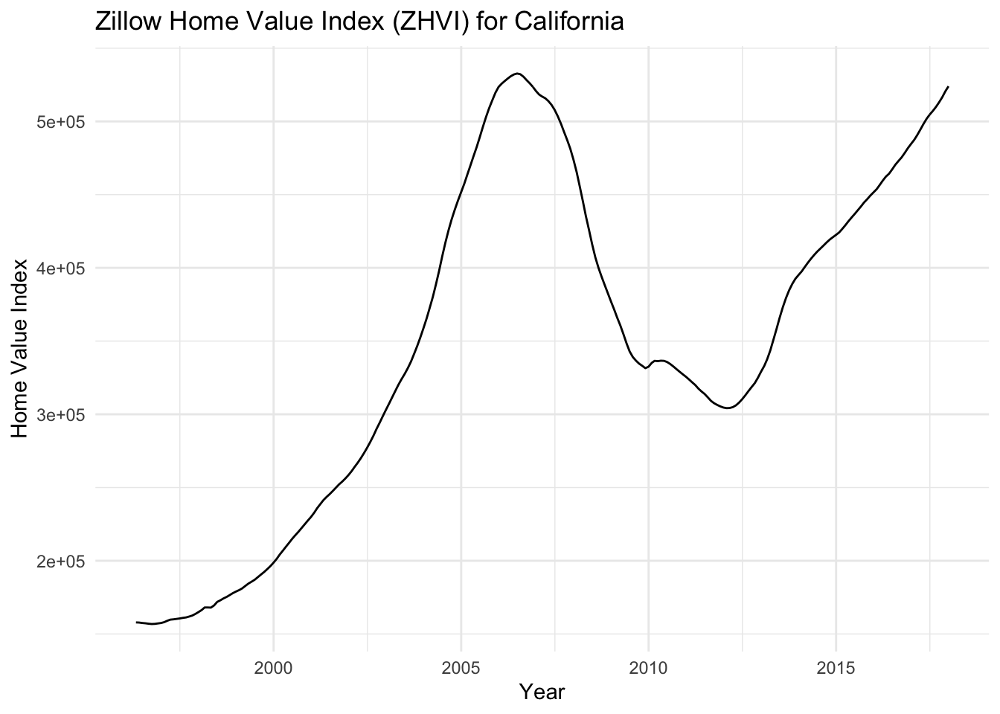
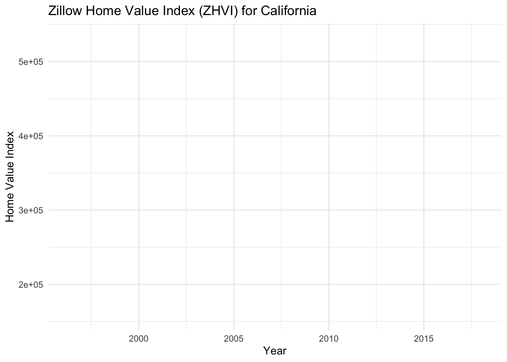
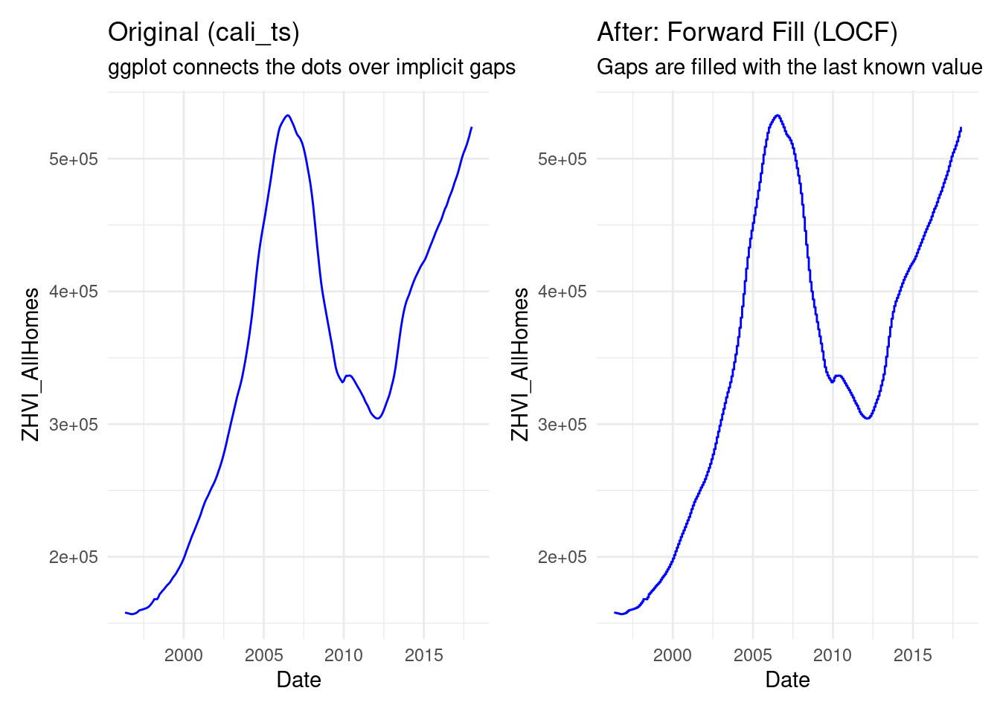

# install.packages("fpp3")
library(fpp3)
library(dplyr)
library(tidyr)
library(ggplot2)
library(ggtime)
library(patchwork)House Dataset Exploration
renan
Exploring House price datasets for CAP-6771 (Fall 2025)
This report has a very basic exploration of the dataset for sake of simplicity and to keep it a small report, further exploration will be continuosly update on the project page: https://github.com/renanmb/CAP-6771—Data-Mining-Project
1. Introduction
On this blog post we will be exploring several data sources for the House Price Forecasting project and evaluating what can be done and what the next steps we must take to properly aanswer the research questions.
Run the following command to download the Zillow Economics Data[1]:
```{bash}
#!/bin/bash
curl -L -o ~/Downloads/zecon.zip\
https://www.kaggle.com/api/v1/datasets/download/zillow/zecon
```1.1 Load packages
2. Load the Dataset
The following code will locate the folder datasets and then it will give back the variable datasets_path which you can use to build the path to the desired data to be loaded.
Code
find_git_root <- function(start = getwd()) {
path <- normalizePath(start, winslash = "/", mustWork = TRUE)
while (path != dirname(path)) {
if (dir.exists(file.path(path, ".git"))) return(path)
path <- dirname(path)
}
stop("No .git directory found — are you inside a Git repository?")
}
repo_root <- find_git_root()
datasets_path <- file.path(repo_root, "datasets")
zillow_economics_data_path <- file.path(datasets_path, "zillow-economics-data-01")
state_time_series <- file.path(zillow_economics_data_path, "State_time_series.csv")
all_states_data <- read.csv(state_time_series)3. Exploring Data
The ‘Date’ column is a character, let’s convert it to a Date object.
# Inspect the data structure
str(all_states_data)'data.frame': 13212 obs. of 82 variables:
$ Date : chr "1996-04-30" "1996-04-30" "1996-04-30" "1996-04-30" ...
$ RegionName : chr "Alabama" "Arizona" "Arkansas" "California" ...
$ DaysOnZillow_AllHomes : num NA NA NA NA NA NA NA NA NA NA ...
$ InventorySeasonallyAdjusted_AllHomes : int NA NA NA NA NA NA NA NA NA NA ...
$ InventoryRaw_AllHomes : int NA NA NA NA NA NA NA NA NA NA ...
$ MedianListingPricePerSqft_1Bedroom : num NA NA NA NA NA NA NA NA NA NA ...
$ MedianListingPricePerSqft_2Bedroom : num NA NA NA NA NA NA NA NA NA NA ...
$ MedianListingPricePerSqft_3Bedroom : num NA NA NA NA NA NA NA NA NA NA ...
$ MedianListingPricePerSqft_4Bedroom : num NA NA NA NA NA NA NA NA NA NA ...
$ MedianListingPricePerSqft_5BedroomOrMore : num NA NA NA NA NA NA NA NA NA NA ...
$ MedianListingPricePerSqft_AllHomes : num NA NA NA NA NA NA NA NA NA NA ...
$ MedianListingPricePerSqft_CondoCoop : num NA NA NA NA NA NA NA NA NA NA ...
$ MedianListingPricePerSqft_DuplexTriplex : num NA NA NA NA NA NA NA NA NA NA ...
$ MedianListingPricePerSqft_SingleFamilyResidence : num NA NA NA NA NA NA NA NA NA NA ...
$ MedianListingPrice_1Bedroom : num NA NA NA NA NA NA NA NA NA NA ...
$ MedianListingPrice_2Bedroom : num NA NA NA NA NA NA NA NA NA NA ...
$ MedianListingPrice_3Bedroom : num NA NA NA NA NA NA NA NA NA NA ...
$ MedianListingPrice_4Bedroom : num NA NA NA NA NA NA NA NA NA NA ...
$ MedianListingPrice_5BedroomOrMore : num NA NA NA NA NA NA NA NA NA NA ...
$ MedianListingPrice_AllHomes : num NA NA NA NA NA NA NA NA NA NA ...
$ MedianListingPrice_CondoCoop : num NA NA NA NA NA NA NA NA NA NA ...
$ MedianListingPrice_DuplexTriplex : num NA NA NA NA NA NA NA NA NA NA ...
$ MedianListingPrice_SingleFamilyResidence : num NA NA NA NA NA NA NA NA NA NA ...
$ MedianPctOfPriceReduction_AllHomes : num NA NA NA NA NA NA NA NA NA NA ...
$ MedianPctOfPriceReduction_CondoCoop : num NA NA NA NA NA NA NA NA NA NA ...
$ MedianPctOfPriceReduction_SingleFamilyResidence : num NA NA NA NA NA NA NA NA NA NA ...
$ MedianPriceCutDollar_AllHomes : num NA NA NA NA NA NA NA NA NA NA ...
$ MedianPriceCutDollar_CondoCoop : num NA NA NA NA NA NA NA NA NA NA ...
$ MedianPriceCutDollar_SingleFamilyResidence : num NA NA NA NA NA NA NA NA NA NA ...
$ MedianRentalPricePerSqft_1Bedroom : num NA NA NA NA NA NA NA NA NA NA ...
$ MedianRentalPricePerSqft_2Bedroom : num NA NA NA NA NA NA NA NA NA NA ...
$ MedianRentalPricePerSqft_3Bedroom : num NA NA NA NA NA NA NA NA NA NA ...
$ MedianRentalPricePerSqft_4Bedroom : num NA NA NA NA NA NA NA NA NA NA ...
$ MedianRentalPricePerSqft_5BedroomOrMore : num NA NA NA NA NA NA NA NA NA NA ...
$ MedianRentalPricePerSqft_AllHomes : num NA NA NA NA NA NA NA NA NA NA ...
$ MedianRentalPricePerSqft_CondoCoop : num NA NA NA NA NA NA NA NA NA NA ...
$ MedianRentalPricePerSqft_DuplexTriplex : num NA NA NA NA NA NA NA NA NA NA ...
$ MedianRentalPricePerSqft_MultiFamilyResidence5PlusUnits : num NA NA NA NA NA NA NA NA NA NA ...
$ MedianRentalPricePerSqft_SingleFamilyResidence : num NA NA NA NA NA NA NA NA NA NA ...
$ MedianRentalPricePerSqft_Studio : num NA NA NA NA NA NA NA NA NA NA ...
$ MedianRentalPrice_1Bedroom : num NA NA NA NA NA NA NA NA NA NA ...
$ MedianRentalPrice_2Bedroom : num NA NA NA NA NA NA NA NA NA NA ...
$ MedianRentalPrice_3Bedroom : num NA NA NA NA NA NA NA NA NA NA ...
$ MedianRentalPrice_4Bedroom : num NA NA NA NA NA NA NA NA NA NA ...
$ MedianRentalPrice_5BedroomOrMore : num NA NA NA NA NA NA NA NA NA NA ...
$ MedianRentalPrice_AllHomes : num NA NA NA NA NA NA NA NA NA NA ...
$ MedianRentalPrice_CondoCoop : num NA NA NA NA NA NA NA NA NA NA ...
$ MedianRentalPrice_DuplexTriplex : num NA NA NA NA NA NA NA NA NA NA ...
$ MedianRentalPrice_MultiFamilyResidence5PlusUnits : num NA NA NA NA NA NA NA NA NA NA ...
$ MedianRentalPrice_SingleFamilyResidence : num NA NA NA NA NA NA NA NA NA NA ...
$ MedianRentalPrice_Studio : num NA NA NA NA NA NA NA NA NA NA ...
$ ZHVIPerSqft_AllHomes : int 50 62 42 102 82 85 71 56 55 185 ...
$ PctOfHomesDecreasingInValues_AllHomes : num NA NA NA NA NA NA NA NA NA NA ...
$ PctOfHomesIncreasingInValues_AllHomes : num NA NA NA NA NA NA NA NA NA NA ...
$ PctOfHomesSellingForGain_AllHomes : num NA NA NA NA NA NA NA NA NA NA ...
$ PctOfHomesSellingForLoss_AllHomes : num NA NA NA NA NA NA NA NA NA NA ...
$ PctOfListingsWithPriceReductionsSeasAdj_AllHomes : num NA NA NA NA NA NA NA NA NA NA ...
$ PctOfListingsWithPriceReductionsSeasAdj_CondoCoop : num NA NA NA NA NA NA NA NA NA NA ...
$ PctOfListingsWithPriceReductionsSeasAdj_SingleFamilyResidence: num NA NA NA NA NA NA NA NA NA NA ...
$ PctOfListingsWithPriceReductions_AllHomes : num NA NA NA NA NA NA NA NA NA NA ...
$ PctOfListingsWithPriceReductions_CondoCoop : num NA NA NA NA NA NA NA NA NA NA ...
$ PctOfListingsWithPriceReductions_SingleFamilyResidence : num NA NA NA NA NA NA NA NA NA NA ...
$ PriceToRentRatio_AllHomes : num NA NA NA NA NA NA NA NA NA NA ...
$ Sale_Counts : num NA NA NA NA NA NA NA NA NA NA ...
$ Sale_Counts_Seas_Adj : num NA NA NA NA NA NA NA NA NA NA ...
$ Sale_Prices : num NA NA NA NA NA NA NA NA NA NA ...
$ ZHVI_1bedroom : int 61500 59200 53000 93700 77800 64700 90100 45400 74900 152300 ...
$ ZHVI_2bedroom : int 48900 86400 54500 123400 97500 97000 88200 65400 64700 186600 ...
$ ZHVI_3bedroom : int 78200 96100 76800 150900 129000 130400 103500 89100 88000 231800 ...
$ ZHVI_4bedroom : int 146500 128400 135100 196100 176100 194800 157800 133600 149700 303400 ...
$ ZHVI_5BedroomOrMore : int 206300 190500 186000 265300 212900 299800 176100 199900 212800 345500 ...
$ ZHVI_AllHomes : int 79500 103600 64400 157900 128100 132000 106800 86300 92000 227400 ...
$ ZHVI_BottomTier : int 45600 67100 38400 95100 82700 83700 77200 52500 57200 144500 ...
$ ZHVI_CondoCoop : int 99500 78900 70300 136100 99400 85000 NA 70600 89300 177000 ...
$ ZHVI_MiddleTier : int 79500 103600 64400 157900 128100 132000 106800 86300 92000 227400 ...
$ ZHVI_SingleFamilyResidence : int 79000 107500 64500 162000 133600 141000 107400 92100 92400 262600 ...
$ ZHVI_TopTier : int 140200 168700 115200 270600 209300 231600 161600 155300 163900 374700 ...
$ ZRI_AllHomes : int NA NA NA NA NA NA NA NA NA NA ...
$ ZRI_AllHomesPlusMultifamily : int NA NA NA NA NA NA NA NA NA NA ...
$ ZriPerSqft_AllHomes : num NA NA NA NA NA NA NA NA NA NA ...
$ Zri_MultiFamilyResidenceRental : int NA NA NA NA NA NA NA NA NA NA ...
$ Zri_SingleFamilyResidenceRental : int NA NA NA NA NA NA NA NA NA NA ...Now we Convert ‘Date’ column to a Date object.
all_states_data$Date <- as.Date(all_states_data$Date)Lets Check how many N/As and think about
# Count total NAs per column
colSums(is.na(all_states_data))Making it pretty
# Get the total number of rows for calculating percentages
total_rows <- nrow(all_states_data)
# Create a pretty summary table
na_summary <- all_states_data %>%
# 1. Count NAs for every column
summarise(across(everything(), ~sum(is.na(.)))) %>%
# 2. Pivot the data from wide to long
pivot_longer(everything(),
names_to = "Column",
values_to = "NA_Count") %>%
# 3. (Optional) Filter to only show columns that HAVE NAs
filter(NA_Count > 0) %>%
# 4. (Optional) Add a percentage column
mutate(NA_Percentage = (NA_Count / total_rows) * 100) %>%
# 5. Sort by the highest NA count
arrange(desc(NA_Count))
# Print the clean table
print(na_summary)# A tibble: 80 × 3
Column NA_Count NA_Percentage
<chr> <int> <dbl>
1 PctOfHomesSellingForGain_AllHomes 12609 95.4
2 PctOfHomesSellingForLoss_AllHomes 12609 95.4
3 MedianRentalPrice_5BedroomOrMore 11994 90.8
4 MedianRentalPricePerSqft_5BedroomOrMore 11752 88.9
5 MedianRentalPricePerSqft_Studio 10875 82.3
6 MedianRentalPrice_CondoCoop 10437 79.0
7 MedianRentalPricePerSqft_DuplexTriplex 10293 77.9
8 MedianRentalPrice_Studio 10211 77.3
9 MedianListingPrice_1Bedroom 10205 77.2
10 MedianRentalPrice_DuplexTriplex 10068 76.2
# ℹ 70 more rows# Some random tinkering
# head(all_states_data)
# summary(all_states_data)4. Time Series Initial Analysis
Now we will further explore the dataset. As we could observe that the dataset is large and has many columns for metrics we must continue to filter for a specific state and metric to start making this more manageable. Then later we will come back to explore the full dataset and the other datasets.
4.1 Zillow Economics Data
We create the timeseries object using ‘tsibble’ which is a time-aware data frame. This is the standard object for the ‘fpp3’ workflow. Then we index the time component.
For sake of simplicity we are going to focus for now on a single State (California) and the Zillow Home Value Index (ZHVI_AllHomes) over time.
# Let's analyze the Zillow Home Value Index (ZHVI_AllHomes) for "California".
cali_zhvi <- all_states_data %>%
filter(RegionName == "California") %>%
select(Date, ZHVI_AllHomes) %>%
# Remove any missing values for this metric
na.omit()Just a quick check:
# Inspect the new, focused data frame
head(cali_zhvi) Date ZHVI_AllHomes
1 1996-04-30 157900
2 1996-05-31 157800
3 1996-06-30 157500
4 1996-07-31 157300
5 1996-08-31 157000
6 1996-09-30 156800Making the Time Series object cali_ts:
cali_ts <- cali_zhvi %>%
as_tsibble(index = Date)Further experiments need to handle the N/As when filling the gaps:
# We set 'Date' as the 'index' (the time component).
cali_ts_fill_gaps <- cali_zhvi %>%
as_tsibble(index = Date) %>%
fill_gaps()
# If you were analyzing multiple states, you would add a 'key'.
# Example for multiple states (not run here):
# multi_state_ts <- all_states_data %>%
# select(Date, RegionName, ZHVI_AllHomes) %>%
# as_tsibble(index = Date, key = RegionName)Lets see how many N/As after filling the gaps:
# Count total NAs per column
colSums(is.na(cali_ts))
colSums(is.na(cali_ts_fill_gaps))Forward Fill (LOCF): Uses the last known value to fill gaps. Ideal for stable or categorical data but not for volatile metrics.
# 1. APPLY LOCF TO THE CALIFORNIA DATA
# ------------------------------------
# We use fill() on the ZHVI_AllHomes column.
# The default direction is "down", which is exactly what LOCF is.
cali_locf <- cali_ts_fill_gaps %>%
fill(ZHVI_AllHomes)# cali_ts4.1.1 Plot the Time Series
We can make an initial plot to see that there is a trend and the data is non-stationary.
cali_ts %>%
autoplot(ZHVI_AllHomes) +
labs(title = "Zillow Home Value Index (ZHVI) for California",
y = "Home Value Index",
x = "Year") +
theme_minimal()
We can see that filling the gaps creates some issues, this was fixed with the LOCF:
cali_ts_fill_gaps %>%
autoplot(ZHVI_AllHomes) +
labs(title = "Zillow Home Value Index (ZHVI) for California",
y = "Home Value Index",
x = "Year") +
theme_minimal()
Exploring for Seasonality which is not that evident, need further study:
# --- B. Look for Seasonality ---
# A season plot layers the data by year, helping to spot seasonal patterns.
cali_locf %>%
gg_season(ZHVI_AllHomes, labels = "right") +
labs(title = "Seasonal Plot: ZHVI for California",
y = "Home Value Index")
Let’s plot the “before” and “after” side-by-side to see if there are any evident changes.
# Plot 1: Using the original, gappy data
p1 <- ggplot(cali_ts, aes(x = Date, y = ZHVI_AllHomes)) +
geom_line(color = "blue") +
labs(title = "Original (cali_ts)",
subtitle = "ggplot connects the dots over implicit gaps") +
theme_minimal()
# Plot 2: Using the data fixed with fill_gaps()
p2 <- ggplot(cali_locf, aes(x = Date, y = ZHVI_AllHomes)) +
geom_line(color = "blue") +
labs(title = "After: Forward Fill (LOCF)",
subtitle = "Gaps are filled with the last known value") +
theme_minimal()
# Combine them side-by-side
p1 + p2
MISC
The naniar package is built specifically for exploring missing data. It has a miss_var_summary() function that does help visualizing missing data. Might consider implementing.
```{r}
# install.packages("naniar")
library(naniar)
# This one function does it all, already sorted!
miss_var_summary(all_states_data)
# Example output:
# A tibble: 271 × 3
# variable n_miss pct_miss
# <chr> <int> <dbl>
# 1 ZRI_AllHomes_CondoCoop 149463 79.2
# 2 ZRI_AllHomes_DuplexTriplex 142137 75.3
# ...
```References
1. zillow. (n.d.). Zillow Economics Data. https://www.kaggle.com/datasets/zillow/zecon